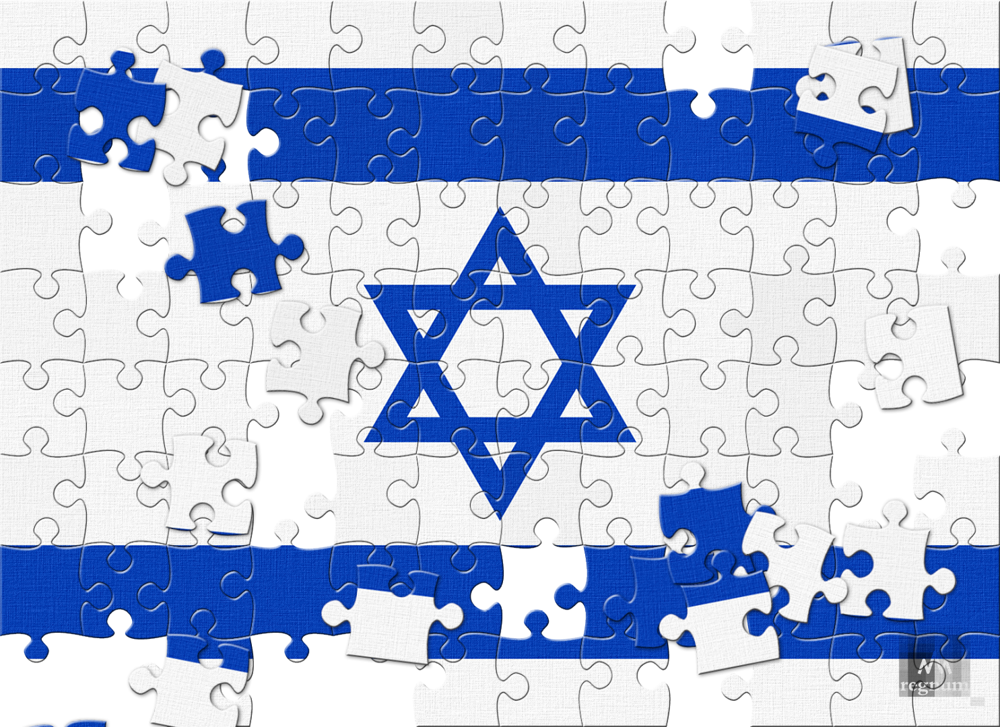

Ізраїль - це і земля, і народ. Історія єврейського народу, що йде корінням в Землю Ізраїлю, триває вже тридцять п'ять століть. Саме тут, за словами Декларації Незалежності, "склався його духовний, релігійний і політичний вигляд", тут, незважаючи на багаторазову трагедію вигнання, століттями зберігалася єврейська присутність. З проголошенням Держави Ізраїль в 1948 році, загублена 2000 років тому незалежність єврейського народу на його батьківщині була відновлена.

Ізраїль знаходиться на Близькому Сході. Його територія пролягає вздовж східного узбережжя Середземного моря і межує з Єгиптом, Сирією, Ліваном і Йорданією. Ізраїль лежить на перехресті трьох континентів: Європи, Азії та Африки
Територія Ізраїлю вузька і витягнута в довжину - 470 км. з півночі на південь і 135 км із заходу на схід в самому широкому перерізі. Незважаючи на свої незначні розміри, Ізраїль включає в себе топографічні риси цілого континенту - від лісистих пагорбів і родючих долин до степових рівнин і гористих пустель, від прибережної смуги до субтропічної Йорданської долини і Мертвого моря - найнижчої точки на Землі. Майже половину території країни займають пустелі і напівпустелі.
Сонячний - так, одним словом, можна охарактеризувати клімат Ізраїлю, хоча в період з листопада по квітень у країні періодично йдуть сильні дощі. Щорічний обсяг опадів коливається від 50-70 см на півночі до менше 3 см на півдні. Регіональні кліматичні умови істотно різняться - для приморської рівнини характерні жарке, вологе літо і
Багате розмаїття рослинного і тваринного світу Ізраїлю відображає як його географічне розташування, так і різноманітність його рельєфу і клімату. Тут мешкають більше 500 видів птахів, близько двохсот видів ссавців і плазунів і 2600 видів рослин, з них 160 зустрічаються тільки в Ізраїлі. За роки незалежності в Ізраїлі було створено більше 150 заповідників і 65 національних парків загальною площею майже 1,000 кв. км.
Гостра нестача води в регіоні спонукає Ізраїль до інтенсивних зусиль по максимальному використанню наявних та пошуку нових водних ресурсів. Уже в шістдесяті роки джерела прісної води Ізраїлю були об'єднані в національну мережу, головна артерія якої, Національний водовід, доставляє воду з півночі і центру країни на посушливий південь. При розвитку водних ресурсів особлива увага приділяється опріснення морської води, повторному використанню стічних вод і засіванню хмар.
Ізраїль - це країна іммігрантів. З 1948 року його населення зросло більш ніж в десять разів. Сьогодні понад 7,8 мільйона ізраїльтян представляють собою багату мозаіку, різноманітну за своїми етнічними коренями, способом життя, релігіями, традиціями і культурою. Євреї складають 75,4% населення Ізраїлю, араби - 20,5%.
Тисячолітня історія, збирання воєдино євреїв з понад 70 країн, різноманітність етнічних груп, що живуть пліч-о-пліч, а також потік інформації з-за кордону каналами супутникового і кабельного телебачення внесли свій вклад в розвиток ізраїльської культури, що поєднує елементи космополітизму з яскраво вираженим самобутнім характером. Мистецтво Ізраїлю так само різноманітно, як і його народ - література, театр, естрада, радіо і телебачення, музеї і виставки відповідають всім смакам та інтересам. Хоча державними мовами країни є тільки іврит і арабська, Ізраїль - це одна з найбільш багатомовних країн у світі. Іврит, мова Біблії, століттями зберігалася лише в єврейській літературі і богослужінні, була відроджена сто років тому, знову ставши супутником і виразником оновленого життя єврейського народу на його вічній землі.